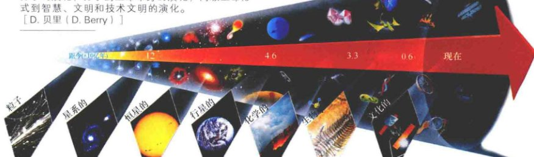
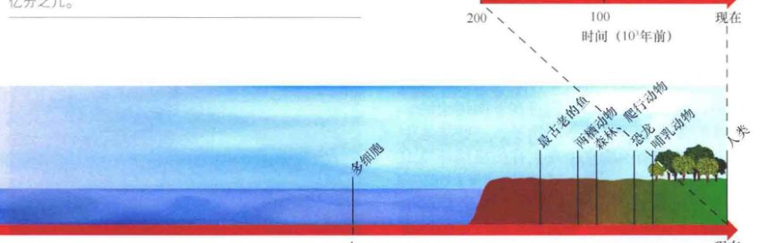
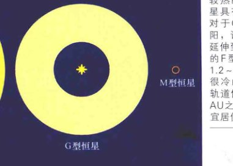
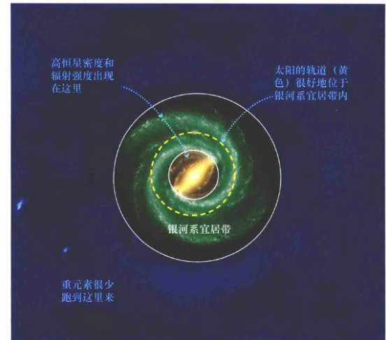
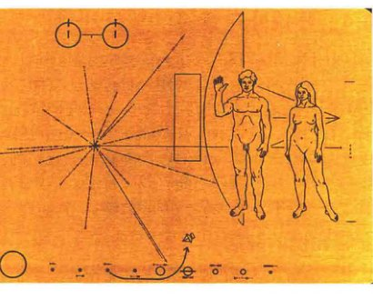

<style>
    /* 基础样式：沉浸式阅读体验 */
    body { 
        font-family: -apple-system, BlinkMacSystemFont, "Segoe UI", Roboto, "Helvetica Neue", Arial, sans-serif; 
        line-height: 1.8; 
        color: #333;
        max-width: 800px; 
        margin: 0 auto; 
        padding: 40px 20px; 
        background-color: #fff;
    }

    /* 章节单元 */
    .chapter-unit { margin-bottom: 60px; }

    /* 标题体系 */
    h1 { font-size: 2.5em; color: #c0392b; border-bottom: 3px solid #eee; padding-bottom: 15px; margin-top: 0; line-height: 1.2; }
    h1 .subtitle { display: block; font-size: 0.6em; color: #7f8c8d; font-weight: normal; margin-top: 10px; }
    h2 { font-size: 1.8em; color: #2c3e50; margin-top: 50px; border-left: 5px solid #c0392b; padding-left: 15px; }
    h3 { font-size: 1.4em; color: #2980b9; margin-top: 35px; }
    h4 { font-size: 1.1em; color: #16a085; margin-top: 25px; text-transform: uppercase; letter-spacing: 1px; }
    
    /* 正文 */
    p { margin-bottom: 1.5em; text-align: justify; }

    /* 特殊区域 */
    .sidebar { background: #f7f9fb; padding: 25px; border-left: 5px solid #3498db; margin: 30px 0; border-radius: 4px; }
    .sidebar.focus { background: #fff8e1; border-left-color: #f1c40f; } /* 用于“探索”类侧边栏 */
    .sidebar.summary { background: #e8f8f5; border-left-color: #1abc9c; } /* 用于章节总结 */
    
    .exercises { background: #fffcf0; padding: 25px; margin: 40px 0; border: 1px solid #f0e6d2; border-radius: 8px; }
    
    /* 列表 */
    ul, ol { margin-bottom: 1.5em; padding-left: 20px; }
    li { margin-bottom: 0.5em; }
    
    /* 图片占位符 */
    .image-placeholder { 
        background: #f8f9fa; border: 1px solid #dee2e6; 
        display: flex; align-items: center; justify-content: center;
        margin: 25px auto 10px auto; 
        color: #6c757d; font-family: monospace; font-size: 0.8em;
    }
    .image-placeholder::before { content: "🖼️ Image Area " attr(data-bbox); }
    .caption { font-size: 0.9em; color: #666; text-align: center; margin-bottom: 35px; font-style: italic; border-bottom: 1px solid #eee; padding-bottom: 10px;}
    .caption strong { color: #c0392b; font-style: normal; }

    /* 表格与公式 */
    sup { font-size: 0.7em; }
    .concept-check { color: #d35400; font-weight: bold; margin-top: 20px; }
</style>
<!-- 整个第6章内容流 -->
<article class="chapter-unit">

<div class="caption">
<strong>左图：</strong> 这张奇特的画，题为《星系升起在外星人的行星上》，暗示了一个离地球极其遥远的外星世界的生命多元化——一些可能灭绝，一些可能很奇异。尽管电影大片、科幻小说，以及许多人声称自己接触了外星人，但天文学家迄今为止没有发现在宇宙中其他任何地方有任何形式的生命存在的确凿证据。[© 达纳·贝里 (Dana Berry)]
    </div>
<h1>第6章 宇宙中的生命 <span class="subtitle">我们是孤独的吗？</span></h1>
<p>我们是唯一的吗？我们行星上的生命是生命在宇宙中的唯一例子吗？如果是这样，那么一个如此孤独的宇宙可能的含义是什么？如果不是这样，那么我们应该如何以及在何处寻找其他智慧生物？这些都是棘手的问题，因为外星生命的话题是一个我们没有数据但又很重要的问题，将对人类这一物种产生深远的影响。</p>
<p>在这最后一章中，我们要研究人类是如何在地球上进化的，然后考虑这些进化的步骤是否可能会在其他地方发生。接下来，我们要评估我们有星系邻居的可能性，并考虑如果它们确实存在的话，我们将如何去研究它们。</p>
<!-- 侧边栏：学习目标 -->
<aside class="sidebar">
<h3>学习目标</h3>
<p>本章的学习将使你能够：</p>
<ul>
<li>总结目前已知的宇宙演化的过程。</li>
<li>确定在太阳系其他地方可能有生命存在的最有希望的位置，并解释为什么它们是有希望的。</li>
<li>概述我们可能会用于搜索外星人并与它们交流的一些技术。</li>
<li>总结用来估计在银河系中可能存在的先进文明数量的各种可能性。</li>
</ul>
</aside>
<!-- 侧边栏：知识全景 -->
<aside class="sidebar summary">
<h3>知识全景</h3>
<p>地球是宇宙中我们确定知道有生命存在的唯一的地方。尽管有在宇宙中其他地方存在生命的可能性，但我们没有明确的证据。在之前发现的数百个太阳系外行星中，尚无一个显示出任何有生命的迹象——包括智慧生命或其他任何生命形式。即便如此，天文学家仍很用心地不断注视天空，因为他们知道，外星智慧（ETI）的证据可能会出现在任何时候。</p>
</aside>
<div class="sidebar" style="font-size: 0.9em; background: #fff;">
<strong>精通天文学</strong><br/>
        访问 MasteringAstronomy 网站的学习板块，获取小测验、动画、视频、互动图，以及自学教程。
    </div>
<h2>6.1 宇宙演化</h2>
<p>在我们对宇宙的研究中，我们一直非常小心，以避免做出任何推论或结论说地球在宇宙中是一个特殊的地方。这叫作哥白尼原理，或折中原则，是对我们宝贵的指导，帮助我们确定我们在“大图景”中的地位。然而，在讨论宇宙中的生命时，我们面临一个问题：我们的地球是已知唯一有生命和智慧进化的行星。因此在讨论智慧生命时，很难不把人类作为特殊情况来看待。</p>
<p>于是，在这最后一章中，我们采用了截然不同的方法。我们首先描述只导向技术娴熟和智能的文明——我们人类自身——的事件链。然后，我们试图评估在宇宙中的其他地方寻找智慧生命并与之交流的可能性。</p>
<h3>宇宙中的生命</h3>
<p>现在我们有了这个显而易见的人类中心的观点，图6.1确定了在我们的星球促成生命发展的7个主要的演化阶段：粒子、星系、恒星、行星、化学、生物学和文明的进化。物质在早期宇宙中从能量中形成，然后冷却并成群，形成星系和恒星。在星系中，一代又一代的恒星形成和死亡，播种了含有重元素的星际介质。这样，当我们的太阳在第一颗恒星闪耀的数十亿年后形成时，岩石行星——地球随之形成。最终，在地球上，生命出现，并慢慢进化成我们今天所看到的多样的生态环境。</p>
<p>总之，这些演化阶段代表了宇宙演化的所有阶段——造就了我们这个星球上的生命和文明的物质和能量的不断变换。前四个阶段以相反的顺序展现了本套书的内容。现在，我们扩展我们的视野，超越天文学，来讨论后面三个。</p>

<div class="caption">
<strong>图6.1 时间之箭</strong><br/>
        从宇宙的开端一直到现在，宇宙历史的一些亮点——涉及地球上生命的出现，沿着这条时间之箭被标了出来。箭头的下部是7个“窗口”，概述宇宙演化的主要阶段：原始能量到基本粒子的演化，原子到星系和恒星的演化，恒星到重元素的演化，元素到固态、岩石行星的演化，同样的元素到生命的基本成分——分子的演化，分子到生命本身的演化，高级生命形式到智慧、文明和技术文明的演化。
    </div>
<p>从大爆炸到星系的形成，到太阳系的诞生，到生命的出现，再到智慧和文明的进化，宇宙已经从简单演化到复杂。我们是一个极其复杂的、长达数十亿年的事件链。这些事件是随机的吗，从而使我们独特，还是在某种意义上是自然的，使技术文明——作为一个实际问题，我们认为这个词的意思是“能通过电磁波或其他手段与行星之外进行通信的文明”——成为必然？换句话说，我们在宇宙中是孤独的吗？或者我们只是银河系中无数智慧生命形式的一员吗？</p>
<p>在试图回答这些重要问题之前，我们需要给“生命”这个词下定义。但是，定义“生命”不是一件容易的事：生物与非生物之间的区别并不如我们猛然一下想到的那样明显。虽然大多数物理学家都同意对物质和能量的定义，但生物学家还没有得出“生命”的明确定义。一般来说，科学家认为以下几项可作为生物体的特征：①它们可以对环境做出响应，并且常常可以在受伤时自我治疗；②它们可以通过周围的环境汲取养分，并将其加工成能量而生长；③它们可以繁殖，并将自己的一些特性遗传给后代；④它们有基因变化的能力，因此可以世代进化，并适应不断变化的环境。</p>
<p>这些规则是不严格的，解释它们有很大的回旋余地。例如，恒星会对它们邻居的引力做出反应，会通过吸积而增长，会产生能量，并通过引发新的恒星形成而“再生”，但没有人会认为它们是活着的。相反地，病毒（探索6-1）从生物体中分离后虽是惰性的，但一旦它进入一个生命系统，它便表现出生命的所有属性，抓住并控制一个活细胞，并利用细胞自身的遗传机制生长和繁殖。大多数研究人员现在认为，生命和无生命物质之间的区别不仅仅是结构，其复杂性不是一个简单的规则清单能概括的。</p>
<!-- 侧边栏：病毒 -->
<aside class="sidebar focus">
<h3>探索6-1：病毒</h3>
<p>化学演化的中心思想是，生命从无生命的分子进化而来。但是，除了基于生化知识和实验室对原始地球上一些关键事件的模拟和推想，我们有任何直接的证据，表明生命可以由无生命的分子发展而来吗？答案是肯定的。</p>
<p>最小、最简单的，有时似乎活着的一种实体是病毒。我们说“有时”，是因为病毒似乎既有无生命的分子属性，又有生命的细胞的属性。病毒一词源自拉丁词中的“poison（毒药）”——一个合适的名字，因为病毒通常会导致疾病。虽然它们有许多尺寸和形状——一个典型的例子是脊髓灰质炎病毒，右图显示了其放大30万倍的样子——所有病毒的大小都小于典型的现代细胞。有些病毒只由几千个原子组成。然后，根据其大小，病毒似乎填补了作为生物的细胞和作为非生物的分子之间的空白。</p>

<p>病毒含有一些蛋白质和遗传信息（以DNA或密切相关的分子RNA的形式，两种分子负责传输遗传特性，从上一代到下一代），但没有太多其他东西——没有与任何生物体正常生长和繁殖对应的材料。那么，病毒如何能被认为是活的？事实上，单独来看，它确实不是。当从生物体中被分离出来时，病毒绝对是无生命的。但是，当在一个生命系统内时，病毒便会有生命的所有性质。病毒通过将其遗传物质传入活细胞而表现出活性。病毒基因抓住并控制一个细胞，然后将自己建立成化学活性的新主人。病毒通过使用被侵入细胞的遗传机制生长和繁殖自己的副本，还经常“抢劫”细胞的一些功能。有些病毒的繁殖迅速且广泛，还传播疾病，如果不加以控制，最终就会杀死入侵的有机体。那么，从某种意义上说，病毒存在于生物和非生物之间的灰色地带。</p>
</aside>
<p>赞成外星生命存在的观点一般来自于对所谓的折中假设的总结：①由于地球上的生命只依赖于一些基本的分子；②由于组成这些分子的元素（在较大或一定程度上）对所有的恒星来说都很普通；③如果我们知道的科学规律还用于整个宇宙，正如我们在整本书中所认为的那样，那么——给予足够的时间——生命必然会在宇宙的其他地方起源。反对的观点则认为，地球上的智慧生命是一系列非常幸运的、意外的产物，这样的天文、地质、化学、生物事件似乎不可能在宇宙中的其他地方发生。本章的目的是检查这两种观点各自的一些论据。</p>
<h3>化学演化</h3>
<p>关于地球的最早阶段，我们有些什么信息？不幸的是，不是很多。第一个10亿年前后的地质线索很大程度上被暴力的地球表面活动抹消了——先是火山爆发以及陨石轰击我们的行星，随后被风和水侵蚀，因此很少有那个时代的证据能留存到现在。科学家认为，早期的地球是贫瘠的，有很浅的、没有生命的海洋冲刷着寸草不生、没有树木的大陆。气体通过火山、裂隙、间歇泉从我们这个星球的内部散发出去，产生了富含氢、氮和碳化合物的大气，但缺乏氧气。随着地球的冷却，氨、甲烷、二氧化碳和水形成了。生命出现的舞台已经搭好。</p>
<p>年轻的地球表面曾经是一个受多种因素剧烈影响的地方。天然放射性、闪电、火山活动、太阳紫外辐射、陨石撞击都提供了大量的能量，最终将我们星球上的氨、甲烷、二氧化碳和水塑造成被称为<strong>氨基酸</strong>和<strong>核苷酸碱基</strong>的更为复杂的分子——正如我们知道的，有机（碳基）分子是生命的基石。氨基酸构建蛋白质，蛋白质控制代谢、食物和能量的日常使用——它们令有机体保持存活并进行各种重要的活动。核苷酸序列是基因——DNA分子的一部分——的基础形式，基因直接由蛋白质合成，从而确定该生物体的特征（见图6.2）。这些相同的基因借由生物体的每一个细胞中所含的DNA，通过繁殖从上一代传递遗传特征到下一代。在地球上的所有生物体内——从细菌到变形虫，再到人类——基因操控着生命，蛋白质维护着生命。</p>

<div class="caption">
<strong>图6.2 DNA分子</strong><br/>
        DNA（脱氧核糖核酸）是包含全部生物体需要用于繁殖和存活的遗传信息的分子，往往由上百亿个单个原子构成。它的双螺旋结构允许它“解螺旋”，暴露其内部结构，以控制蛋白质——细胞功能需要——的创建。其组成部分的顺序对每个有机体个体而言是唯一的。
    </div>
<p>这一观点——复杂的分子可以很自然地从原始地球发现的比较简单的成分进化而来——自20世纪20年代就已经有了。第一个实验验证是在1953年，由科学家哈罗德·尤里和斯坦利·米勒使用有点类似于图6.3所示的实验室设备进行的，这就是<strong>尤里-米勒实验</strong>。他们准备了一瓶混合物，由被认为是地球上很久以前存在的物质——水、甲烷、二氧化碳和氨——混在一起形成了所谓的“原始汤”，然后通过在气体中放电（模拟“闪电”）令其活跃。过了几天，他们分析了该混合物，发现它包含了许多相同的氨基酸，这种氨基酸存在于地球上的所有生物中。大约10年后，科学家们成功地以类似的方式构建了核苷酸碱基。这些实验已经用许多不同的形式——混入更接近真实的气体混合物，使用不同的能源——重复过了，总是具有相同的基本结果。</p>

<div class="caption">
<strong>图6.3 尤里-米勒实验</strong><br/>
        这种化学装置被设计为通过对简单的化学物质混合物放电来合成复杂的生化分子。气体（氨、甲烷、二氧化碳和水蒸气）被放置在上部灯泡中来模拟地球的原始大气，然后被近似于闪电的火花放电电极击穿。大约一个星期后，氨基酸等复杂分子出现在底部的装置里，它模拟了原始海洋，其上方的大气产生的重分子会下沉进去。
    </div>
<p>虽然这些实验没有生产过一个活的有机体，更不用说DNA单链了，但它们确实令人信服地证实了“生物”分子——涉及生物体功能的分子——可以通过严格的非生物方法合成，只使用早期地球上可用的原始物质。更先进的实验——其中的氨基酸在热的作用下联合起来——已制作出类蛋白质的斑点，其行为在一定程度上像是真实的生物细胞。这样的类蛋白质物质不溶于水（所以它从原始大气掉进海洋时会保持完整），并趋于聚集形成被称为微球的小液滴——有点儿像浮在水面上的油滴。图6.4所示为一些实验室制造的类蛋白质的微球，它们的壁允许小分子进入，小分子会在液滴内部结合并构造更复杂的分子，被构造出来的分子太大，不能穿过壁跑回去。随着液滴“成长”，它们倾向于“繁殖”——形成更小的液滴。</p>

<div class="caption">
<strong>图6.4 化学演化</strong><br/>
        在一个液体球中，这些富含碳的类蛋白样液滴中含有多达十亿的氨基酸分子。液滴可以“生长”，它们的一部分可以从它们的“母”液滴中分离出来，成为新的单独的液滴（如同在A、B和C处的情况）。[S. 福克斯 (S. Fox)]
    </div>
<p>这些类蛋白质微球是活的吗？几乎可以肯定不是。大多数生物化学家会说，微球不是生命本身，但它们包含许多形成生命所需要的基本成分。微球缺乏遗传性的DNA分子。然而，如图6.5所示，它们确实与在化石记录中发现的远古细胞有相似之处，这些远古细胞相应地与现代生物（如蓝藻）有很多相似之处。因此，虽然没有实际的活细胞在任何实验室中“从无到有”地被创造出来，但许多生物化学家认为，简单的非生物分子导致的事件链几乎形成了生命本身这一结论，已经得到了充分的证明。</p>

<div class="caption">
<strong>图6.5 原始细胞</strong><br/>
        (a) 该照片展示了原始化石，显示出被更小的球体连接的同心球或壁。它们在由放射性测定距今约20亿年的沉积物中被发现。(b) 作为比较，这是现代蓝藻构建的“后院水系”，以大致相同的比例显示。[E. 巴格豪恩 (E. Barghoorn)]
    </div>
<h3>星际起源？</h3>
<p>近日，一个不同的观点已经出现了。一些科学家认为，地球的原始大气可能实际上不是生产复杂分子的一个特别合适的环境。这些科学家说，可能没有足够的可用能量来驱动必要的化学反应，早期的大气可能没有包含足够的原始原料令这些反应在任何情况下都变得十分重要。他们认为，结合形成第一个活细胞的大部分——就算不是全部——有机材料（碳基的）是在<strong>星际空间</strong>中产生的，并随后以彗星、星际尘埃和流星——在它们下降穿过大气层时没有燃尽——的形式到达地球。</p>
<p>有一些证据支持这种想法。已知星际分子云含有复杂的分子——确实，甚至有报道（仍未经证实）说在星际空间至少有一种氨基酸（甘氨酸）。</p>
<p>为了测试星际空间假说，NASA的研究人员已经进行了自己版本的尤里-米勒实验。在实验中，他们将一个由水、甲醇、氨和一氧化碳——代表了许多星际颗粒——组成的冰混合物暴露在紫外辐射中，模拟从邻近的新生恒星来的能量。如图6.6所示，当他们把照射后的冰放置在水中检查结果时，他们发现，冰形成了被薄膜包围并含有复杂有机分子的液滴。早期实验发现了液滴，但在混合物中没有观测到氨基酸、蛋白质或DNA。不过，这类实验被反复多次进行，结果清楚地表明，即使是严酷的、寒冷的星际空间的真空环境，也可以是一个合适的能形成复杂分子和原始细胞结构的培养基。</p>

<div class="caption">
<strong>图6.6 星际球状体</strong><br/>
        这些含有丰富有机分子的油性、空心的液滴是将原始物质的冷冻混合物暴露在严酷的紫外辐射中制成的。当浸没在水中时，较大的液滴显示出细胞状膜结构。虽然它们并不是活着的，但它们的存在支持这样的想法：地球上的生命可能来自太空。[美国国家航空航天局 (NASA)]
    </div>
<p>这些冰冷的星际颗粒被认为已经在我们自己的太阳系内形成了彗星。当哈雷彗星上次访问太阳系内部时，宇宙探测器在哈雷彗星上检测到了大量的有机物质，同样的复杂分子也已经在众多被研究得很广泛的彗星上——如海尔-波普——被发现了。我们有理由怀疑彗星撞击造成了地球上大部分的水，想象这些水已经包含了生命的基本成分——这也许是一小步。</p>
<p>此外，一小部分跌落到地球表面并“生存”下来的陨石含有有机化合物。默奇森陨石（见图6.7）——1969年落在澳大利亚的默奇森附近——是一个研究得特别充分的例子。这块陨石在坠落后不久就被找到，已被证明含有12种通常在活细胞中发现的氨基酸，尽管这些分子的精细结构表明了，在太空中发现的氨基酸和在地球上发现的氨基酸有潜在的重要区别。但最起码，这些发现认为，复杂的分子可以在行星际或恒星际环境中形成，它们可以在燃烧着下降后毫发无损地到达地球表面。</p>

<div class="caption">
<strong>图6.7 默奇森陨石</strong><br/>
        默奇森陨石含有相当多的氨基酸和其他有机物质。这表明，某种化学演化在我们自己的星球以外发生了。在这张来自陨石的一块碎片的放大图中，箭头指向一个有机物的微观球。[哈佛-史密松天体物理中心 (Harvard-Smithsonian CfA)]
    </div>
<p>因此，有机质以星际碎片的形式不断地如雨点般从太空落到地球上这一假说是相当合理的。然而，这是否是复杂的分子首先出现在地球海洋中的主要形式，仍不明朗。</p>
<h3>多样性与文明</h3>
<p>无论基本的材料是如何出现在地球上的，我们都知道，生命的确出现了。化石记录记载了地球上的生命是如何随着时间的推移变得分布广泛和多元化的。对化石遗迹的研究显示了简单的单细胞生物——如35亿多年前的蓝藻——的最初外观。紧随其后出现的是更复杂的单细胞生物，如大约20亿年前的变形虫。多细胞生物，如海绵，在约10亿年前出现，然后出现了蓬勃发展的各种日益复杂的生物——昆虫、爬行动物、哺乳动物。图6.8所示为地球上生命进化中的一些关键发展阶段。</p>

<div class="caption">
<strong>图6.8 地球上的生命</strong><br/>
        地球上生命起源和演化的这个简化的时间表，开始于最左边约46亿年前的地球起源，线性延伸到最右边的现在。请注意我们最熟悉的生命形式——鱼、爬行动物、哺乳动物——出现在地球历史相对较晚的时期。技术文明在地球上存在的时间只有我们这个星球的生命时间的亿分之几。
    </div>
<p>化石记录让这一点毫无疑问：生物体随时间而变化——所有的科学家都接受<strong>生物进化</strong>这一现实。随着地球上的环境变化和地球表面的演变，可以最好地利用新环境的生物会成功和繁荣；相反地，无法进行必要调整的生物会因此而灭绝。</p>
<p>是什么导致了这些变化？运气。恰好拥有有利的基因性状——例如，跑得更快、爬得更高，甚至更容易隐藏的能力——的生物体会发现自己在一个特定的环境中占上风。该生物体，因此更有可能成功地繁殖，并且其有利的特性更容易被遗传到下一代。地球上丰富多彩的生命，包括人类，随着偶发的突变——基因结构的改变——而发生的进化，导致了超过百万年的生物体的变化。</p>
<p>那么，智力发展又是如何呢？许多人类学家认为，类似其他所有的非常有用的特质，智力受到自然选择的强烈青睐。随着人类了解了火、工具和农业，人类的大脑变得越来越精细。与协调狩猎的尝试相伴的社会合作，是随着大脑体积的增加而开发出来的另一种重要的竞争优势。</p>
<p>也许最重要的是语言的发展。事实上，一些人类学家已经认为人类的智慧就是人类的语言。利用语言，在打猎或寻求保护的时候，一个个体可以向另一个个体发出信号。更重要的是，我们的祖先可以如同分享食物和住所一样分享思想。经验储存在大脑中作为记忆，可以一代又一代地往下传。一种新的进化开始了，即<strong>文化演化</strong>——社会思想和行为的变化。仅仅在10,000年左右的时间内，我们不算太遥远的祖先就创造了整个人类文明。</p>
<p>为了更好地把握生命进化的时间进程，我们将地球整个46亿年的生命想象为46年。在这个尺度下，我们没有地球历史的第一个10年的可靠记录。生命至少起源于35年前，当时地球大约10岁。我们这个星球的中年在很大程度上是一个谜，即使我们可以肯定生命在不断进化，一代又一代，沧海桑田，不断变迁。直到大约6年前，大量的生命才在整个海洋中蓬勃发展。大约4年前，生命上岸。大约2年前，植物和动物主宰了大地。恐龙在大约1年前达到高峰，然后在仅仅约4个月后就突然死亡。直到最后一周，类人猿才变成类猿人，而最近的冰河期只发生在几天前。智人——我们的物种——一直到大约4小时前才出现。农业在最后一个小时内才被发明，而文艺复兴——以及所有的现代科学——的年龄仅仅只有3分钟！</p>
<section class="concept-check">
<h4>概念理解检查</h4>
<p><strong>✔ 化学演化在实验室中被验证了吗？</strong></p>
</section>
<h2>6.2 太阳系中的生命</h2>
<p>简单的单细胞生命形式在我们这个星球的大多数历史中居于地球的最高统治地位。需要时间——大量的时间——才能让生命出现在海洋，进化成简单的植物，继续进化成复杂的动物，然后发展出智力、文化和技术。这些（或类似的）事件在宇宙中的其他地方有发生吗？让我们尝试评估我们在在这个问题上的证据。</p>
<h3>我们所知道的生命</h3>
<p>“我们所知道的生命”通常意味着起源于液体水环境的碳基生命，换句话说就是地球上的生命。这样的生命可能存在于我们太阳系的其他地方吗？</p>
<p>月球和水星缺乏液态水，也缺乏大气保护和磁场，所以这两个天体都遭受太阳紫外辐射、太阳风、流星体和宇宙射线的猛烈轰击。简单的分子不能在这样恶劣的环境中生存。与此相反，金星有太多的保护性大气！它的高密度的、干燥灼热的大气毯子有效地令其远离生命——至少像我们这样的生命——的存在。</p>
<p>类木行星没有固体表面（虽然一些研究人员认为，生命也许能在它们的大气层中进化），而大多数它们的卫星（除了有火山活动的木卫一）的表面早就已经冻结了，过于寒冷，无法支持类似地球上的生命。一个可能的例外是土星的卫星泰坦（土卫六）。泰坦有浓厚的大气——主要成分为甲烷、氨和氮气，液态的烃湖，明显的地质活动，人们认为它的表面是生物可能出现的地方。然而卡西尼-惠更斯号任务的最新结果表明，那里的环境对任何我们所熟悉的生命都不适宜。</p>
<p>更有前途的方案来自于四颗类木行星的卫星——木星的木卫二和木卫三，土星的土卫六和土卫二——可能在其内部含有数量显著的液态水。这种可能性助长了在这些天体内部可能有生命发展的推断，使它们成为未来探索的主要候选体。尤其是木卫二，高居美国国家航空航天局和欧洲航天局的优先级列表的榜首。虽说这些卫星上面或内部的条件就地球的标准而言很不理想，但是正如我们将在下面讨论的，科学家们发现了越来越多的例子，一些陆地生物在一度被视为不适宜生命生存的极端环境中生长得很好。</p>
<p>最有可能有生命（或在过去曾经存在生命）的行星似乎是火星。这颗红色行星的环境按照地球的标准是严酷的：液态水稀缺，大气层很薄，没有磁层和臭氧层，因此太阳高能粒子和紫外线辐射可以不受影响地到达其表面。但在过去，火星的大气层较厚，表面可能温暖和湿润得多。事实上，有来自在火星轨道运行的探测器——如海盗号和火星环球勘测者号——的有力的照片证据，证明在遥远的（甚至是相对较近的）过去，火星上有流动的水和死水。2004年，欧洲的“火星快车”号探测器确认了在火星极地存在水冰这一长久以来的推测。NASA的机遇号探测车公布了强烈的地质证据，表明在其着陆点附近的地区曾经在很长一段时期被水“浸透了”。</p>
<p>所有这些推理都强烈暗示，火星——至少在它过去的一段时间——蕴藏着大量的液态水。然而，没有一个火星探测器的登陆舱探测到了任何可能被解释为大型植物或动物遗迹的东西（化石或其他东西），只有海盗号探测器的登陆舱携带了能够进行详细的生物学分析以检测细菌生命（或者其化石残迹）的设备。海盗号的机械手舀起火星土壤（见图6.9），并通过开展化学实验——检测代谢活动的废气和其他产物——对其进行测试，看生命是否存在，但没有火星生命的确凿证据出现。2012年降落的好奇号探测车（见图6.9）现在工作在酷似古代干涸的湖床附近，至今还没有探测到火星生命——无论是死的还是活的。</p>

<div class="caption">
<strong>图6.9 搜寻火星生命</strong><br/>
        好奇号火星探测车——在图的左侧可以看到它的部分——在赤道附近一个被称为“耶洛奈夫湾”的浅坑中做实验，收集并检测火星泥土样本。它还没有发现生命迹象。[美国国家航空航天局 (NASA)]
    </div>
<p>一些科学家建议，不同类型的生物可能会在火星表面存活。他们认为，能够进食和消化火星土壤中富含氧化物的化合物的火星微生物，也可以解释海盗号的结果。如果近期公布的来自火星陨石中的细菌化石被证实的话（虽然看起来当前的科学观点正在反对该数据判读），那么这种猜测将会被大大增强。今天的生物学家和化学家的共识是，火星不容纳任何类似地球的生命。但火星过去是否存在生命呢？要想做出坚实的判定，需要在我们深入探索了我们这个有趣的邻居之后。</p>
<p>考虑逆境中生命的出现，我们或许不应该仅仅因为极端就很快地排除一个环境。图6.10所示为在深海海床上的一个非常恶劣的环境。在这里，热液喷口向前喷出垂直高度达几米的沸腾的热水，这里的环境完全不同于我们这个星球表面上的任何地方，而生命可以在这样富含硫、缺乏氧气、完全黑暗的环境中蓬勃发展。可以设想，在外星世界也可能存在这种地下温泉，这提高了生命形式的可能性——生命比我们在地球上知道的可能要更加多种多样，它们可以生活在宽广得多的环境范围里。</p>

<div class="caption">
<strong>图6.10 热液喷口</strong><br/>
        一艘两人潜艇（阿尔文号）拍下了这张热泉，或称“黑烟囱”的照片——这是许多沿着东太平洋中脊的热泉的其中一个。随着富含硫的热水从喷管的顶部（近中心）涌出，黑云翻腾出来，给许多在喷口附近欣欣向荣的生命形式提供了一个陌生的环境。插入图显示了喷口底部的一个近距离特写，在那里，嗜极生物蓬勃发展，其中包括——正如在这里看到的——巨大的红色管虫和巨大的螃蟹。[美国伍兹霍尔海洋科学研究所 (WHOI)]
    </div>
<p>近年来，科学家们发现了所谓的<strong>极端微生物</strong>——一种能够生活在极端环境中的生命形式——的许多实例。如图6.10所示的热液喷口是一个例子。同时，极端微生物也在下列这些地方被发现了：深埋在南极冰川下的寒冷的湖泊，地中海的黑暗、缺氧和富盐的海床，加利福尼亚州莫诺湖的富矿和超碱性的环境，甚至是远在地壳之下的富含氢的黑暗火山中。在许多情况下，这些微生物已经进化到了可以采用纯化学手段创造自身所需要的能量，通过<strong>化学合成</strong>而非光合作用——即植物将阳光转化为能量的过程。这些环境中的条件可能与火星、木卫二、土卫六上的条件并没有太大不同，这暗示了，甚至是“我们所知道的生命”也很可能能够在这些充满敌意的外星世界中茁壮成长。</p>
<h3>另类生化指标</h3>
<p>可以想象，某些类型的生物可能与地球上的生命是非常不同，我们不会认出它们，不知道如何来测试它们。这些另类的生物可能是什么？</p>
<p>一些科学家已经指出，元素硅具有类似碳的化学性质，所以认为硅可以作为以碳为基础的生物的一种可能的替代方案。氨（由普通的元素氢和氮组成）有时被提出至少在一颗足够冷的，氨能以液态存在的行星上，可作为生命有可能会在其中发展的可能的液体培养基。一起或分别地，这些替代品肯定会引起有机体在生化上与我们所知道的地球上的生物完全不同。可以想象，我们甚至可能连确定这些生物体是否是活着的都很困难。</p>
<p>虽然这种外星生命形式的可能性是一个引人入胜的科学问题，但大多数生物学家认为，基于碳和水的化学作用是所有情况中最可能导致生命的一种。碳灵活的化学性质和水宽广的液体温度范围正是生命的发展和繁荣所需要的。硅和氨似乎不大可能成为先进生命形式的基础。硅的化学键弱于碳，可能无法形成复杂的分子——而这显然是以碳为基础的生命所必不可少的环节。此外，环境越冷，用于驱动生物过程的能量越少。令氨保持液态所必需的低温，可能会抑制甚至完全阻止能产生氨基酸和核苷酸碱基等价物的化学反应。</p>
<p>尽管如此，我们也必须承认，我们对非碳、非水的生物化学成分几乎一无所知。因为有很好的理由，我们没有它们的样本用于实验研究。我们可以推测外星生命形式，并尝试对它们的特点做一般性评论，但我们对它们的实质可说的很少。</p>
<section class="concept-check">
<h4>概念理解检查</h4>
<p><strong>✔ 哪个太阳系天体（除地球以外）是寻找外星生命的优先候选体？</strong></p>
</section>
<h2>6.3 银河系中的智慧生命</h2>
<p>人类显然是太阳系中唯一的智慧生命，我们必须拓宽我们对外星智慧生命的搜寻，将目光投向其他恒星，甚至其他星系。不过，在这样的距离上，我们几乎没有希望用目前的设备对生命进行实际探测。相反，我们必须问：“生命以任何形式——碳基、硅基、水基、氨基，或一些我们做梦也想不到的东西——存在的可能性有多大？”让我们审视一些数字，以对宇宙中其他地方存在生命的可能性做出估计。</p>
<h3>德雷克方程</h3>
<p>这个问题的早期解决方法被称为<strong>德雷克方程</strong>，以率先分析该问题的美国天文学家的名字命名。它试图表达生命在我们的银河系中的可能性——基于天文学、生物学和人类学方面的具体要素。</p>
<p>当然，这个方程中的几个要素在很大程度上是见仁见智的。我们根本没有足够的信息来确定——甚至只是近似确定——方程中的每一个要素，所以德雷克方程不能给我们一个确凿而快速的答案。其真正的价值在于，它将一个庞大而困难的问题细分成了小问题，这些小问题我们可以尝试单独回答。该方程提供了一个框架，在该框架内，这个问题可以在很多不同的科学学科中分成小部分，将每一个小部分解决了，该问题就能得到最终的解决。如图6.11所示，为什么随着我们的要求越来越严格，银河系中只有一小部分恒星系统可能会产生用方程右边的要素组合得出的较好的结果。</p>
<p>让我们来一一检查方程中的要素，并提出一些有关它们的值的猜测。但请记住，如果你问两位科学家对于任何给定要素的最佳估计，你可能会得到两种截然不同的答案！</p>

<div style="font-size: 0.9em; text-align: center; margin-bottom: 30px;">
<strong>德雷克方程：</strong><br/>
        银河系中的技术文明数量 = (恒星形成率) × (有行星的恒星比例) × (宜居行星数量) × (有生命产生的比例) × (出现智慧的比例) × (技术文明比例) × (技术文明的平均寿命)
    </div>

<div class="caption">
<strong>解说图6.11 德雷克方程</strong><br/>
        我们的银河系中所有的恒星系统的德雷克方程，随着考虑的要素增加，满足条件的恒星越来越少，直到最后——一个典型的长期存在的技术文明社会。
    </div>
<h3>恒星形成率</h3>
<p>我们可以非常简单地估算银河系每年恒星形成的平均数量——目前至少有1000亿颗恒星闪耀在银河系中。用这个数字除以银河系的寿命100亿年，我们得到的形成率为每年10颗恒星。这个比率可能被高估了，因为我们认为现在形成的恒星比银河系早期形成的恒星更少，那时有更多可用的星际气体。然而，我们的确知道恒星在今天仍然正在形成，我们的估计并不包括过去形成，至今已经死亡的恒星，所以我们的值——平均每年10颗恒星——可能是合理的，这是银河系的整个寿命中的平均值。</p>
<h3>有行星系统的恒星的比例</h3>
<p>许多天文学家认为，行星形成是恒星形成过程中的自然结果。如果凝聚理论或它的一些变种是正确的，如果我们的太阳没有什么特别之处——正如我们在本书中说明的，那么我们会想到很多恒星都至少有一颗行星。事实上，正如我们已经看到的，越来越复杂的观测表明，年轻恒星周围存在盘。这些盘是原太阳系吗？凝聚理论表明它们确实是，并且盘较短（理论上）的寿命意味着许多正在形成行星的系统存在于太阳的邻居中。</p>
<p>随着观测技术在过去20年里的改善，这些预期已经被证实了，而且现在有压倒性的证据证明，在数百颗恒星周围都有行星环绕。已发现的第一批系外行星比地球大很多，而且大多数在偏心的或“热”的轨道上运行。这些都是当时用仅有的设备可以检测到的仅有的行星。然而，随着探测技术的进步，越来越多的质量与地球相当的行星被发现。简而言之，到今天已经确认了几十颗地球大小的行星，许多都大致位于类似地球的轨道上。这些观测已经达到了目前探测能力的极限。许多天文学家期待，随着新的探测器的运行，“类地球”的行星数量将会迅速增长。</p>
<p>通过巡天获取了数据的恒星只有大约10%被发现有行星。然而，大多数研究人员认为，这是对真实比例的严重低估——源于观测的限制和选择偏差。因此，按照凝聚理论及其结果，同时既不过于保守，又不过于乐观，我们给这个要素分配了这样一个值——接近1——也就是说，我们认为基本上所有的恒星都形成了某种形式的行星系统。</p>
<h3>这些行星系统的宜居行星的数量</h3>
<p>什么决定了一颗给定的行星上生命的可能性？温度可能是最重要的单一因素——虽然还必须考虑灾难性的外部事件，如彗星的撞击，甚至是遥远的超新星。</p>
<p>一颗行星的表面温度取决于两件事：行星到其母星的距离，以及行星的大气厚度。位于母星附近（但不是太靠近）和有一些大气（但不是太厚）的行星，应该会温暖且比较适宜，像地球或火星。远离母星和没有大气的行星，类似冥王星（译者注：原文如此，但冥王星实际上已经不是行星了），按照我们的标准显然太冷了。太靠近母星和有着很厚大气层的行星，如金星，将会非常热。</p>
<p>一个温度“舒适”的三维<strong>恒星宜居带</strong>围绕着每一颗恒星。（这些区域在我们的二维图中被表示为环，如图6.12所示。）宜居带代表了这样一个距离范围：位于其内的行星，如果质量和组成类似地球，其表面温度将会介于水的冰点和沸点之间。（我们以地球为基础的偏好又在这里清楚地出现了！）恒星越热，这个区域越大（见图6.12）。A型和F型恒星具有相当大的宜居带，但对于G型、K型、M型恒星（虽然有很多类地球和超级地球确实位于其低质量母星的宜居带内），该区域的尺寸迅速减小。</p>

<div class="caption">
<strong>图6.12 恒星宜居带</strong><br/>
        较热的恒星比较冷的恒星具有更大的宜居带。对于G型恒星，比如太阳，该区域从约0.8 AU延伸到2 AU。对于较热的F型恒星，其范围为1.2 ~ 2.8 AU。对于一个很冷的M型恒星，只有轨道位于约0.02 ~ 0.06 AU之间的类地球行星适宜居住。
    </div>
<p>除了较小的宜居带，小质量的M型恒星被认为会有强烈的表面活动的倾向，因此一般不认为它们可能会拥有适宜生命的行星，尽管它们的数量很多。在另一极端，大质量的O型和B型恒星也被认为不大可能是候选体，因为它们比较罕见，并且预计它们的寿命不足以令生命形成，即使它们确实拥有行星。</p>
<p>三颗行星——金星、地球、火星——位于或靠近太阳周围的宜居带。金星太热了，因为它有很厚的大气，并且离太阳比较近；火星太冷了，因为它的大气层太薄，并且离太阳太远。但是，如果金星和火星的轨道被交换——并非不可思议，因为偶然因素在类地行星的形成上起的作用太大了——那么这两颗邻近的行星被认为可能进化出类似地球表面的条件。在这种情况下，我们的太阳系可能有3颗宜居行星，而不是1颗。靠近一颗巨行星也可能会导致一颗卫星（如木卫二）成为宜居的，因为行星的潮汐加热会弥补阳光的缺乏。因为受其母行星的引力庇护，这样的卫星可能会在很大程度上不受刚才针对行星所描述的宜居条件的限制。</p>
<p>一颗在“宜居”轨道上运行的行星仍可能因为一些外部事件而无法居住。许多科学家认为，我们自己的太阳系外部的巨行星对宜居的内部行星是至关重要的，既稳定了后者的轨道，又保护后者免受彗星撞击，将可能发生的对内太阳系的撞击偏转出去。一颗恒星如果有着运行在稳定轨道上且靠内侧的类地行星，那么很可能也会有可以保障它们生存所需要的类木行星。然而，对太阳系外行星的观测尚未足够细化，无法确定拥有类似于太阳系的“外行星”系统的恒星的比例。</p>
<p>其他外部力量也可能影响一颗行星的生存。一些研究人员认为，一般而言，恒星还有一个<strong>星系宜居带</strong>的概念，如果位于其外，环境也会对生命不利（见图6.13）。远离银河系的中心，恒星形成率低，不会发生太多恒星形成循环，因此没有足够的重元素来形成类地行星。即使形成了，也没法提供能发展出技术文明所必需的材料。离银河系的中心太近的话，来自拥挤的银河系内部的明亮恒星和超新星的辐射对生命可能是有害的。更重要的是，附近的恒星的引力效应可能频繁地从类奥尔特云发送“彗星雨”到行星系统的内部区域，撞击类地行星，终结任何可能导向智慧生命的进化链条。</p>

<div class="caption">
<strong>图6.13 银河系宜居带</strong><br/>
        银河系的一些区域可能会比别的区域更有利于生命形成。离银河系中心若太远，未必有足够的重元素能令类地行星形成或发展技术文明。离银河系中心太近，辐射或附近恒星的引力效应可能会导致生命无法出现。虽然它的整个范围并不确定，但其结果是一个环形的宜居带，在这里以绿色表示。
    </div>
<p>因此，要估计每个行星系统中宜居行星的数目，我们必须首先实际清点每种类型的闪耀在银河系的宜居带中的恒星有多少颗，然后计算它们的恒星宜居带的大小，并估计可能在那里发现的行星的数量。在这样做时，我们排除了几乎所有的已经在周围观测到行星的恒星，从总体上大致假定了相同的恒星比例。在大多数情况下，观测到的类木行星有偏心轨道，将破坏任何内侧的类地行星的运动——无论是将它们从系统中完全抛出还是导致它们的环境特别极端，都将使生命发展机会严重减少。我们也排除了大多数的双星系统：由于我们银河系中的双星系统的观测性质，双星系统中在“宜居”轨道上运行的行星在许多情况下将是不稳定的，如图6.14所示，因此会没有时间让生命得以发展。</p>

<div class="caption">
<strong>图6.14 双星系统的行星</strong><br/>
        在双星系统中，行星被限制在少数几种引力稳定的轨道上。(a) 如果行星距其母星非常近，那么另一颗恒星的引力可以忽略不计，此时这个轨道是稳定的。(b) 一颗行星在距两颗恒星很远距离的椭圆轨道上运行，这种情况下的轨道可以是稳定的。(c) 这是另一种可能的轨道，行星在两颗恒星间交织运行，呈现出如图所示的8字形。
    </div>
<p>对位于宜居轨道的类地球行星，目前可用的巡天观测证据表明，已知的行星系统中只有百分之几包含宜居行星。然而，由于这些行星是如此接近现有设备探测能力的极限，许多天文学家认为，真正的比例会变得高很多。可能宜居的类木行星的卫星仍然可以进一步提高比例。然而，许多不确定因素依然存在。银河系宜居带的内、外半径还完全不确定；另外一个简单的事实是，对大多数恒星，我们仍然没有足够的数据，无法对它们的行星系统中的宜居世界做出强有力的声明。</p>
<p>我们努力将这众多的不确定因素考虑在内，最终将公式中的这一要素赋值为1/10。换句话说，我们认为，在我们的银河系中，平均每10个行星系统中，可能会有1颗宜居的行星。F型、G型和K型单星是最好的候选体。</p>
<h3>有生命产生的宜居行星的比例</h3>
<p>原子可能的组合数量多得令人难以置信。如果导致组成生物体的复杂分子的化学反应是完全随机发生的，那么这些分子极有可能根本不会形成。在这种情况下，生命是异常罕见的，这一要素接近于零，我们可能是孤独地存在于银河系中，甚至是整个宇宙中。</p>
<p>然而，实验室的实验（如前面所述的尤里-米勒实验）表明，似乎某些特定的化学组合比其他的更受青睐——这就是说，反应不是随机的。各种简单的原子和分子随机组合，由此可能在地球上发生的几十亿种基本有机基团中，只有约1500种实际上会发生。此外，这1500种地球生物的有机基团，只是由大约50个简单的“积木”（包括前面提到的氨基酸和核苷酸碱基）组成的。这表明，生命的关键分子并不只是由概率独自决定的。显然，额外的要素在微观层面上起了作用。如果数量相对较少的化学“演化轨迹”可能存在的话，那么复杂分子——同样，我们假设生命——的形成就变得容易得多了，只需给予足够的时间。</p>
<p>分配给方程的这一要素一个很低的值的话，可能会让人觉得生命是随机产生的，非常稀有。要分配给这一要素接近1的值，又会觉得生命是不可避免的——只要给定恰当的原料、合适的环境和足够长的时间。没有简单的实验可以区分这些极端的选择，并且很少有或根本没有中间地带。对许多研究者而言，生命（过去或现在）在火星、木卫二、土卫六或我们的太阳系中其他一些天体上的发现，将把生命从一个不可能的奇迹，转换成在整个银河系中板上钉钉的事。基于这一原则：一个有着其他生命形式的宇宙比没有要有趣得多，我们将采取乐观的看法，并认为该要素的值为1。</p>
<h3>有生命的行星上出现智慧的比例</h3>
<p>如同生命的进化，发展良好的大脑的出现更加不可能只与概率有关。然而，自然选择的生物进化是一个通过挑选和精炼有用特性，从而产生看上去极不可能的结果的机制。有益地使用适应性的生物体，可以发展出更复杂的行为，而复杂的行为给生物体提供了各种选择，让其可以进行更高级的发展。</p>
<p>一派观点认为，给予足够的时间，智能进化是必然的。从这个角度来看，假设自然选择是一种普遍现象，在一颗行星上至少有一种生物会一直上升到“智慧生命”的水平。如果是正确的，那么德雷克方程的第五个要素就等于或接近等于1。</p>
<p>另一种观点认为，只有一个已知的智慧生命的例子——地球上的人类。有25亿年——从35亿年前的生命开始，到约10亿年前多细胞生物体的首次出现——生命并不高级，没有超出单细胞阶段。如果这后一种观点是正确的，那么等式中的第五个要素就是非常小的，我们正面临着令人沮丧的前景，人类可能是银河系中最聪明的生命形式。正如我们考虑前面的要素那样，我们将保持乐观，在这里简单地采用1为该要素的值。</p>
<h3>智慧生命得以发展并使用技术的行星比例</h3>
<p>要评估我们公式的第六个要素，我们需要估计智慧生命最终开发技术能力的概率。如果技术的崛起是不可避免的——只要给予足够长的时间，这一要素就接近于1。如果它不是不可避免的——如果智慧生命能以某种方式“避免”发展技术——那么这一要素可能远远远小于1。后者设想了一个可能充满智慧文明的宇宙，但其中很少有能成为有技术能力的。也许只有一个掌握了技术——我们。</p>
<p>再次，在这两个观点之间，很难得出结论。我们不知道有多少地球史前文化没能发展出简单的技术或拒绝技术的使用。我们知道，我们现代文明产生的根源分布在地球上几个不同的地方，包括美索不达米亚、印度、中国、埃及、墨西哥、秘鲁。因为这么多的古老文明在大约同一时间起源，很容易让人得出这样的结论：机会恰当时，某种技术社会将不可避免地发展，只要给予基本的智力和足够的时间。</p>
<p>如果技术是不可避免的，那么为什么地球上其他生命形式没有发现它有用？也许，人类作为第一个发展出智慧和技术的物种，获得了明显的竞争优势，使我们能够如此迅速地占据主导，而其他物种——例如大猩猩和黑猩猩——根本就不可能来得及赶上我们。地球上只有一个技术社会存在的事实，并不意味着我们的德雷克方程的第六个要素必须比1小得多。相反，正是因为一些物种可能会总是填补技术智慧的空白，所以我们认为这一要素将接近于1。</p>
<h3>一个技术文明的平均寿命</h3>
<p>在德雷克方程中，对每个要素估计的可靠性从左到右明显下降。例如，我们的天文知识让我们在第一要素——我们银河系中的恒星形成率——做出了一个相当不错的尝试，但对后面一些要素的评估就要困难得多了，如在有生命的行星上最终发展出智慧的比例。方程右边的最后一个要素——技术文明的寿命，是完全未知的，只有一个已知的这样的文明例子：地球上的人类。我们自己的文明在其“技术”的状态生存了仅仅约100年，我们将继续这一状态多久，直到自然或人为的灾难结束这一切，这是完全无法预测的。</p>
<h3>银河系中技术文明的数量</h3>
<p>有一件事是肯定的：如果公式中的任何一个要素的正确值非常小——而且我们刚才看到至少有两个要素可能会是这种情况，尽管我们做出了乐观的选择——那么就只有几个技术文明现在会存在于银河系中。换句话说，如果对生命或智力发展的悲观看法是正确的，那么，我们将是唯一的，这就是我们故事的结局。但是，如许多科学家认为的，如果生命和智慧是化学和生物进化的必然结果，如果智慧生命总是成为技术文明，那么我们就可以将更高、更乐观的值插入到德雷克方程中。在这种情况下，结合我们对其他六个要素的估计（并注意，10 × 1 × 1/10 × 1 × 1 × 1 = 1），我们得到</p>
<div style="background: #f0f0f0; padding: 15px; text-align: center; border-radius: 5px; margin: 20px 0;">
<strong>现在银河系中的技术和智慧文明的数量 = 一个技术文明的平均寿命（以年为单位）</strong>
</div>
<p>因此，如果文明通常能生存1000年，那么目前应该有1000个文明社会存在，分散在整个银河系中。平均而言，如果他们能生存100万年，我们会认为银河系中有100万个先进的文明存在，以此类推。</p>
<p>需要注意的是，即使撇开语言和文化的问题，规模庞大的银河系技术文明之间的沟通也面临一个重大障碍。一个双向通信的最低要求是，我们可以发出的一个信号，并在比我们自己文明的一生更短的时间里得到答复。如果文明的一生是短暂的，那么文明实际上少之又少——根据德雷克方程，本来文明的数量就少，还散落在浩瀚的银河系中——它们之间的距离（光年）远远大于它们的寿命（年）。在这种情况下，双向通信，即使以光速也是不可能的。然而，随着寿命的增加和银河系变得更加拥挤，间隔距离变得越来越小，前景得到了改善。</p>
<p>再考虑恒星的大小、形状和在银盘中（我们为什么要排除银晕？）的分布，并且在刚才做出的乐观假设下，我们不难发现，除非一个文明的预期寿命至少有几千年，否则文明之间不可能有时间来沟通，即使是与其最近的邻居沟通。</p>
<section class="concept-check">
<h4>科学过程理解检查</h4>
<p><strong>✔ 如果对大部分要素已大致达成共识，那么德雷克方程如何协助天文学家精炼他们对外星生命的搜寻？</strong></p>
</section>
<h2>6.4 寻找外星智慧</h2>
<p>让我们继续我们对生命前景的乐观评估。假设当最初的技术磨合问题一旦过去，文明会长时间停留在它们的母行星上。在这种情况下，智慧的、技术的，甚至能通信的文明可能在银河系中很丰富。我们怎么能意识到它们的存在？对外星智慧的不断寻找（许多人认识其缩写——SETI）是最后一节的话题。</p>
<h3>会晤我们的邻居</h3>
<p>定性地，让我们假设一个技术文明的平均寿命是100万年——只有恐龙时代的1%，但比人类文明迄今已存活的时间长100倍。鉴于我们银河系的大小和形状，以及银盘中恒星已知的分布，我们就可以估算这些文明之间的平均距离约为30pc，或约100光年。因此，任何与我们邻居的双向通信——使用信号的速度等于或低于光速——将需要至少200年（100年，消息到达对方的行星，然后另一个100年，答复才能回到我们这里）。</p>
<p>一个明显的寻找外星生命的方法将会是开发旅行到远远超出我们太阳系的地方的能力。然而，这可能永远不会有实际可能性。以50km/s的速度——今天最快的空间探测器的速度，往返最近的类似太阳的恒星——半人马座阿尔法星，将需要约50,000年。到最近的技术文明邻居（假设距离30pc）再返回的旅程将花60万年——这几乎是我们人类这一物种的整个生命周期！星际旅行以这样的速度显然是不可行的。将我们的飞船加速到接近光速将减少旅行时间，但这样做远远超出了我们目前的技术。</p>
<p>其实，我们的文明已经发射了一些星际探测器，虽然它们没有具体的恒星目标。图6.15所示为一块金属板的复制品，这块金属板搭载在20世纪70年代中期发射的先驱者10号飞船上，该飞船现在已远远超出了冥王星的轨道，正行驶在飞出太阳系的路上。类似的信息搭载在1978年发射的旅行者号探测器上。虽然这些航天器将无法把它们遇到了一个外星文明的消息传回地球，但科学家们希望，另一端的文明将能够解开我们使用的通用数学语言所记录的内容的大部分。图6.15的说明文字介绍了外星人怎样能发现先驱者号和旅行者号探测器是在何时从何地发射的。</p>

<div class="caption">
<strong>图6.15 星际信息</strong><br/>
        这块搭载在先驱者10号飞船上的金属板的复制品显示了按照相同比例描绘的飞船本身、一个男人和一个女人；正在进行能量变化的氢原子示意图（左上），代表不同脉冲星和其射电频率——可以用于估计飞船的发射时间——的星爆图案；以及对太阳系的描绘，显示飞船发射于从太阳数起的第三颗行星，并在其通往星际空间的路上通过了第五颗行星（底部）。[美国国家航空航天局 (NASA)]
    </div>
<p>撇开在试图与外星人建立直接联系中出现的许多实际问题，一些科学家在争辩这甚至可能不是一个特别好的主意。我们最近刚刚进入技术文明，这意味着我们必然在整个银河系中是最不先进的技术智慧。任何发现我们的其他文明几乎肯定会比我们更先进。因此，适当的谨慎可能是必要的。如果遥远的外星人的行为像地球上的人类文明，那么最先进的外星人自然可能试图主宰所有其他文明。在17、18、19世纪，“先进”的欧洲文明，面对在他们的发现之旅中遭遇的“原始”种族的行为，应作为与外星文明接触可能产生的不良后果的明确警告。当然，地球人的侵略性可能无法适用于外星人，但鉴于我们已知的唯一智慧种族的历史，审慎的做法可能是合乎情理的。</p>
<h3>无线电通信</h3>
<p>更便宜、更实用的对直接接触方案的替代是尝试与外星人仅使用电磁辐射——已知最快的从一个地方到另一个地方传递信息的手段——进行通信。由于可见光和其他高频辐射在穿越多尘埃的星际空间时会被严重散射，所以长波的无线电辐射似乎是自然的选择。然而，我们不会试图对邻近的所有候选恒星进行广播——这将过于昂贵且效率低下。相反，地球上的射电望远镜将被动地监听其他文明所发射的无线电信号。事实上，一些初步选定的对邻近恒星的搜索正在进行中，但迄今都没有成功。</p>
<p>我们应该将我们的射电望远镜瞄准什么方向？这个问题的答案是相当简单的：在我们前面推理的基础上，我们应该针对所有的在我们附近的F型、G型和K型恒星。但外星人会广播无线电信号吗？如果他们都没有，这种搜索显然会失败；即使他们会，我们又怎么将他们人为产生的无线电信号与自然的由星际气体云发出的信号区别开来？我们应该调整我们的接收机到什么频率？这个问题的答案取决于信号是故意制作的，还是仅仅是从一颗行星逃逸出去的“废物辐射”。</p>
<p>考虑地球在射电波段对外星人而言看起来的样子。图6.16显示了射电信号发射到太空中的图案。从遥远的观测者的角度来看，自转的地球每隔几小时发出一道明亮的射电辐射。事实上，现在的地球是比太阳更强烈的无线电发射器。闪光产生于周期性上升和下落的数百个FM广播电台和电视信号发射器。每个站的广播主要平行于地球表面，但同时也会有“一大片”电磁辐射散逸到星际空间中，如图6.16(a)所示。（更常见的AM广播被束缚于我们的电离层，因此这些信号从来不曾离开过地球。）</p>

<div class="caption">
<strong>图6.16 地球的无线电泄漏</strong><br/>
        无线电辐射从地球外泄到太空，是因为我们这个技术文明的日常活动。(a) 大多数广播和电视发射机广播的能量使其平行于地球表面（人们生活的地方），但同时也会有“一大片”电磁辐射散逸到星际空间中。(b) 由于大部分发射器都集中在美国东部和欧洲西部，所以一名遥远的观测者会探测到来自地球的射电辐射爆发，因为我们的地球每天都在自转。
    </div>
<p>这些发射器的绝大多数都集中在美国东部和欧洲西部，随着我们星球的每天转动，一名遥远的观测者会从地球探测到周期性的辐射爆发 [见图6.16(b)]。这些辐射“争先恐后”地进入太空，并从70多年前这些技术被发明后就一直如此。另一个文明至少要跟我们同样先进，才有可能建造出能够探测这些辐射爆发的设备。如果任何足够先进（和足够有兴趣）的文明居住在我们附近，在距我们大约70光年 (20pc) 的上千颗恒星所拥有的行星上，那么我们就已经广播了我们的存在。</p>
<p>当然，很可能在发明了电缆和光纤技术以后，大多数文明不加选择的信号传送会在几十年后停止。在这种情况下，无线电静默会变成智慧的标志，我们必须找到一个替代手段来定位我们的邻居。</p>
<h3>水洞</h3>
<p>现在，让我们假设，一个文明决定通过向银河系的其余部分积极广播其自身的存在，来帮助搜索者。那么，我们要想听到这样一个外星（导航）无线电信标台，需要在什么频率？电磁波谱是巨大的，单独的广播域是辽阔的。要希望探测到一些未知的无线电信号，就像是大海捞针。是否某些频率比其他的更有可能携带外星信息？</p>
<p>一些基本的讨论表明，文明可能会在20cm波长的附近进行沟通。构建宇宙的基本成分——氢原子，在波长为21cm发出自然辐射。另外，最简单的分子之一——羟基（OH），在18cm附近发出辐射。总之，这两种物质形成水 ($H_2O$)。考虑到水可能是任何地方生命的互动介质，并且穿过我们银河系盘面的射电辐射被星际气体和尘埃吸收得最少，一些研究人员提出，18cm和21cm之间的区间具有文明发送或监控的最好的波长范围。这个无线电区间被称为<strong>水洞</strong>，可能会成为一个“绿洲”——所有先进的银河系文明会聚集于此开展电磁业务。所以，如果ET希望被发现，根据推理，这是我们应该寻找的波段！</p>

<div class="caption">
<strong>图6.17 水洞</strong><br/>
        “水洞”的边界由氢（H）原子在21cm波长和羟基（OH）分子在18cm波长的固有发射频率划出。最上面的实曲线（蓝色）是银河系（长虚线）与地球大气层（点虚线）的自然发射之和，并相应地在顶部叠加了宇宙背景辐射。(4.7节) 这一叠加在水洞频率附近最小，因此所有智慧文明可能会在这个安静的“电磁绿洲”内开展星际通信。
    </div>
<p>当然，水洞的频率区间只是一种猜测，但它也被其他论据支持。图6.17显示出在电磁波谱上水洞的位置，并绘制出来自我们的银河系和地球大气层的自然发射量。18 ~ 21cm范围位于电磁波谱最安静的部分。在这个部分，银河系是“静态的”，因为恒星和星际云的影响碰巧在这里最少。此外，典型的行星——或者至少是与地球差不多的行星——的大气层也预期在这些波长干扰最少。因此，水洞对星际无线电信标台的频率而言似乎是一个不错的选择，虽然我们不能肯定这个推理，直到真正建立起连接。</p>
<p>一些无线电搜索目前正在水洞频率上和其周围进行。在寻找外星智慧生命（其缩写SETI的知名度很高）领域里最灵敏和全面的项目之一，目前正在利用艾伦望远镜阵进行 [见图6.18(a)]。这是一个许多小型碟形天线的集合，当前正在1 ~ 3 GHz的范围内同时搜索数百万个频道。其实，在这些搜索中，计算机做了大部分“监听”的工作，仅当信号看起来耐人寻味时才需要人类涉足。图6.18(b)显示了一个典型的窄带，1Hz信号——一个潜在的智能传输特征——在一台计算机显示器上看起来是什么样子的。然而，这种观测只是一个测试，探测由先驱者10号——它正在远离我们，奔向我们太阳系的外围区域——探测器发出的微弱、红移了的无线电信号。这是一个智慧的信号，但却是我们放在那里的。目前尚未发现任何类似的外星信号。</p>
<p>围绕我们所有人的太空，现在可能正充斥着来自外星文明的无线电信号。如果我们一旦知道了正确的方向和频率，我们也许能够做出有史以来最令人吃惊的发现之一。其结果可能会提供全新的机会来研究宇宙的能量演化、物质和宇宙中的生命。</p>

<div class="caption">
<strong>图6.18 SETI项目</strong><br/>
        (a) 这个在美国加利福尼亚的搜寻地外文明研究所的小型无线电碟形天线阵被设计用于搜寻外星智慧信号。(b) 一个外星信号的典型记录——作为一个测试，在这里显示的是来自先驱者10号飞船（现在远远超出了柯伊伯带）的多普勒频移了的广播——信号斜穿计算机显示器的对角线，明显与背景的随机噪声不同。[地外文明探索学会 (SETI Institute)]
    </div>
<section class="concept-check">
<h4>科学过程理解检查</h4>
<p><strong>✔ 为什么许多研究人员将“水洞”作为一个搜索外星信号的可能频段？</strong></p>
</section>
<div class="sidebar" style="background: #222; color: #fff;">
<h3 style="color: #f1c40f;">终极问题</h3>
<p>行星是否可能会围绕着在宇宙中观测到的无数的恒星运转？在其中的一些行星上是否可能有智慧生命？也许在天文学所有尚未解决的问题中，最著名的是外星人以及其是否在地球之外存在。单就这些问题，对外星生命的搜寻也将继续下去。探索永远不会结束。</p>
</div>
<h1>章节回顾</h1>
<div class="sidebar summary">
<h3>小结</h3>
<ol>
<li>
<strong>宇宙演化(p.144)</strong>是导致了星系、恒星、行星和地球上生命出现的持续过程。生物体可能会通过自身适应环境的能力而塑造特征，从周围环境中吸收营养而生长和繁殖，以将一些自身的特点传递给它们的后代。可以最大限度地利用新环境的生物会成功，而不能根据环境进行必要调整的那些生物会灭亡。智慧受到自然选择的强烈青睐。
            </li>
<li>
                被自然能源驱动，原始地球海洋中的简单分子之间的反应导致了<strong>氨基酸(p.146)</strong>和<strong>碱基(p.147)</strong>的形成，这些都是生命的基本分子。氨基酸构建蛋白质、控制代谢，而核苷酸碱基序列构成DNA——一个活的生物体的基因蓝图。另外，这些复杂分子（或它们的前身）中的一些可能在星际空间中就已经形成了，然后被流星或彗星传递到地球。
            </li>
<li>
                太阳系中，最有希望在地球以外发现生命的是火星，虽然还没有发现直接的有生命的——目前的或已灭绝的——证据。一些外行星的冰卫星——木星的木卫二和木卫三、土星的土卫六和土卫二——也可能含有某种形式的生命。这些冰冻天体的环境就地球标准而言比较严酷，然而地球上的<strong>极端微生物(p.151)</strong>被发现在此前认为生命不可能存在的恶劣环境中也能茁壮成长。
            </li>
<li>
<strong>德雷克方程(p.152)</strong>提供了一种手段，估计银河系中存在智慧生命的概率。公式中的天文要素是银河系的恒星形成率、行星的可能性，以及可居住行星的数量。化学和生物要素决定生命出现的概率和随后发展出智慧的概率。文化和政治要素是智慧走向技术的可能性和一个处于技术状态的文明的寿命。对生命和智慧的发展所持的乐观的看法，导出这样一个结论：银河系中技术文明的总数，约等于一个典型文明的生命周期，以年为单位。即使根据乐观的假设，到我们最近的智慧邻居的距离也可能有数百秒差距。
            </li>
<li>
                目前，太空旅行不是一个寻找智慧生命的可行手段。现有的发现外星智慧的方案主要是扫描电磁波谱，以期待收到信号。到目前为止，还没有收到可理解的广播。一个技术文明可能会通过发射到太空的广播和电视信号向宇宙“宣布”其存在。从远处观测，我们的行星会像一个24h周期的射电源——随着地球不同地区的升起和落下。<strong>“水洞”(p.159)</strong>是这样一个区域：位于电磁频谱的射电波段内，接近氢的21cm线和羟基的18cm线，在这个区域，来自银河系的自然发射恰好最小。许多研究人员认为，这一区域是波谱中用于通信的最好部分。
            </li>
</ol>
</div>
<!-- 习题区域 -->
<section class="exercises">
<h3>复习与讨论</h3>
<ol class="question-list">
<li><strong>L01</strong> 概述导致地球上出现生命的过程。为什么很难得到生命的一般定义？</li>
<li><strong>L02</strong> 什么是化学演化？什么是形成地球上生物分子的基本要素？</li>
<li>什么是尤里-米勒实验？它产生了什么重要的有机分子？还有哪些其他的实验试图通过无机手段产生有机分子？</li>
<li>为什么有些科学家认为生命可能起源于太空？</li>
<li><strong>POS</strong> 我们如何知道关于地球生命早期阶段的事情？</li>
<li>在文化演化中，语言的作用是什么？</li>
<li><strong>L03</strong> 除了地球和火星，我们还希望可能在我们的太阳系中的什么地方找到生命迹象？</li>
<li><strong>POS</strong> 我们是否知道火星在过去任何时候曾经有过生命？是什么支持了它可能曾经拥有生命？</li>
<li><strong>POS</strong> 什么是通常所说的“我们所知道的生命”？什么样的其他生命形式是可能的？</li>
<li><strong>L04</strong> 德雷克方程有多少要素已知具有任何程度的确定性？哪个要素是所知最少的？</li>
<li>哪些因素决定一个恒星适合作为一个可能出现生命的行星的母星？</li>
<li>银河系文明的平均寿命，与我们有一天与其通信的可能性之间的关系是什么？</li>
<li>对外星天文学家而言，地球在无线电波长下看起来是什么样的？利用无线电波进行星际通信的优势是什么？</li>
<li><strong>L05 POS</strong> 什么是“水洞”？它为星际通信提供了什么条件？</li>
<li>如果你在设计一个SETI实验，你会监控天空的哪些部分？</li>
</ol>
<h3>概念自测：选择题</h3>
<ol class="question-list">
<li>“折中假设”认为： (a) 生命应该在整个宇宙中很常见；(b) 低级生物必然会进化到更高级的形态；(c) 下等生命形式的智力低下；(d) 病毒实际上是生命形式。</li>
<li>形成生命所需的基本分子的化学元素被发现： (a) 在类似太阳的恒星的核心中；(b) 很常见，遍布整个宇宙；(c) 仅在有液态水的行星上；(d) 只在地球上。</li>
<li>地球上的早期生命形式的化石记录表明，生命起源于大约： (a) 6000年前；(b) 6500万年前；(c) 35亿年前；(d) 140亿年前。</li>
<li>在另一个星球发现细菌，会是一个重要发现，因为细菌： (a) 在高温下可以很容易地生存下来；(b) 是在地球历史的大部分时间里地球上生命的唯一形式；(c) 是已知存在的生命的最低形式；(d) 最终演化为智慧生命。</li>
<li>德雷克方程中所知最少的要素是： (a) 恒星形成率；(b) 行星系统中宜居行星的平均数；(c) 一个技术文明的平均寿命；(d) 银河系的直径。</li>
<li>虽然围绕一颗M型恒星的宜居带很大，但我们却不经常在那里寻找存在生命的行星，因为这种恒星： (a) 有太强的引力；(b) 寿命太短，生命没有足够时间进化；(c) 温度太低无法维持生命；(d) 将只有气态巨行星。</li>
<li><strong>VIS</strong> 根据图6.12（“恒星宜居带”）显示的数据和你对恒星性质的知识，围绕一颗主序K型恒星的宜居带： (a) 无法被确定；(b) 距恒星延伸超过3AU；(c) 比G型恒星的宜居带大；(d) 比M型恒星的宜居带大。</li>
<li><strong>VIS</strong> 如果将图6.16（“地球的无线电泄漏”）改为一颗两倍自转速度的行星的图，新的锯齿线将会是： (a) 不变；(b) 更高；(c) 水平拉伸；(d) 水平压缩。</li>
<li>射电望远镜不能简单地扫描天空寻找信号，因为： (a) 天文学家不知道外星文明会使用什么频率；(b) 许多无生命的物体会自然地发出无线电信号；(c) 地球上的无线电通信会遮盖外星信号；(d) 在冬季，恶劣的天气阻止了射电望远镜的使用。</li>
<li>在太阳系中最强的无线电波发射器是： (a) 来自地球的人为信号；(b) 太阳；(c) 月球；(d) 木星。</li>
</ol>
<h3>问答</h3>
<ol class="question-list">
<li>如果地球的46亿年的年龄被压缩至46岁，如文中所述，你的年龄将会是多少（以秒为单位）？在这个尺度下，第二次世界大战的结束是多久以前的事？《独立宣言》呢？哥伦布发现新大陆呢？恐龙的灭绝呢？</li>
<li>使用前面问题中的数据，如果太阳光度增加为4倍，太阳的宜居带的内、外半径将会如何变化？</li>
<li>一颗行星在1AU的距离上围绕一对双星系统的一颗子星公转 [见图6.14(a)]。如果两颗恒星具有相同的质量，它们的轨道是圆形的，要求另一颗子星对该行星的潮汐力不超过“安全”值——行星和其母星之间的引力的0.01%——的话，试估计两颗恒星之间的最小距离。</li>
<li>基于本书中呈现的数字，假设一颗合适的恒星的平均寿命是50亿年，估计银河系中宜居行星的总数。</li>
<li>假定德雷克方程中每个要素的值变为1/10，平均的恒星形成率为每年20颗，而每颗恒星都有且仅有1颗宜居行星绕其公转。估计银河系中技术文明的存在数量，假设一种文明的平均寿命为：(a) 100年；(b) 1万年；(c) 100万年。</li>
<li>假设地球上有10,000个广播电台，每个以50kW的功率发射，计算地球在FM波段的总射电光度。将该值与太阳在相同的频率范围内的辐射——大约$10^6 W$——进行比较。</li>
<li>将水洞的波长转换为频率。基于实际的原因，任何对水洞的搜索必须被分成频道，很像你在电视机上遇到的；不同的是，水洞的频道在电磁波谱中很窄，大约为100Hz宽。天文学家必须在水洞中搜索多少个频道？</li>
<li>在100光年范围内，有20,000颗恒星被搜索无线电通信。如果每看一颗恒星花费1h，那么搜索需要多长时间？如果每搜一颗恒星花费1天呢？</li>
</ol>
<h3>实践活动</h3>
<p><strong>协作项目</strong></p>
<ol>
<li>组成一个小组，将你们每个人都同意的对生命的定义写成一段话。这段话应该清楚地表明：岩石不是活的，植物是活的。根据你们的定义，恒星是活的吗？病毒呢？将你们小组的定义与另一个小组的定义比较和对照。</li>
<li>如果与一个外星世界建立了通信，你们的小组被任命“为地球代言”，你们会说什么？你们会问什么样的问题，你们会选择展示我们地球的哪些方面？写下小组发言，并注上你们为什么这么说。</li>
</ol>
<p><strong>个人项目</strong></p>
<ol>
<li>有人认为，如果外星生命被发现，将会对人类文化产生深远的影响。采访你可以采访的尽可能多的人，并询问以下两个问题：(1) 你认为外星生命存在吗？(2) 为什么？根据你的结果，尝试判断外星生命的发现是否确实会深刻地影响地球上的生命。</li>
<li>德雷克方程应该能够“预测”出，至少有一个文明在我们的银河系中；那就是——我们！尝试改变方程中不同要素的值，使你最终得出至少一个。对于生命如何产生和发展？这些要素的不同组合意味着什么？是否有一些组合不代表任何意义呢？</li>
</ol>
</section>
</article>